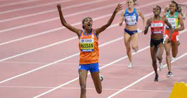

Hardlopen

Hardlopen, in Vlaanderen ook lopen genoemd, is een vorm van atletiek.
Hier kunnen mensen recreatief dan wel in wedstrijdverband aan deelnemen.
Dit artikel handelt over hardlopen in de recreatieve sfeer.
Duurloop is hardlopen voor langere duur en is een vorm van duursport.
Joggen is een specifieke vorm van hardlopen.
Trimmen is een containerbegrip voor meerdere vormen van sport
waaronder hardlopen en kan worden beoefend op een trimbaan.